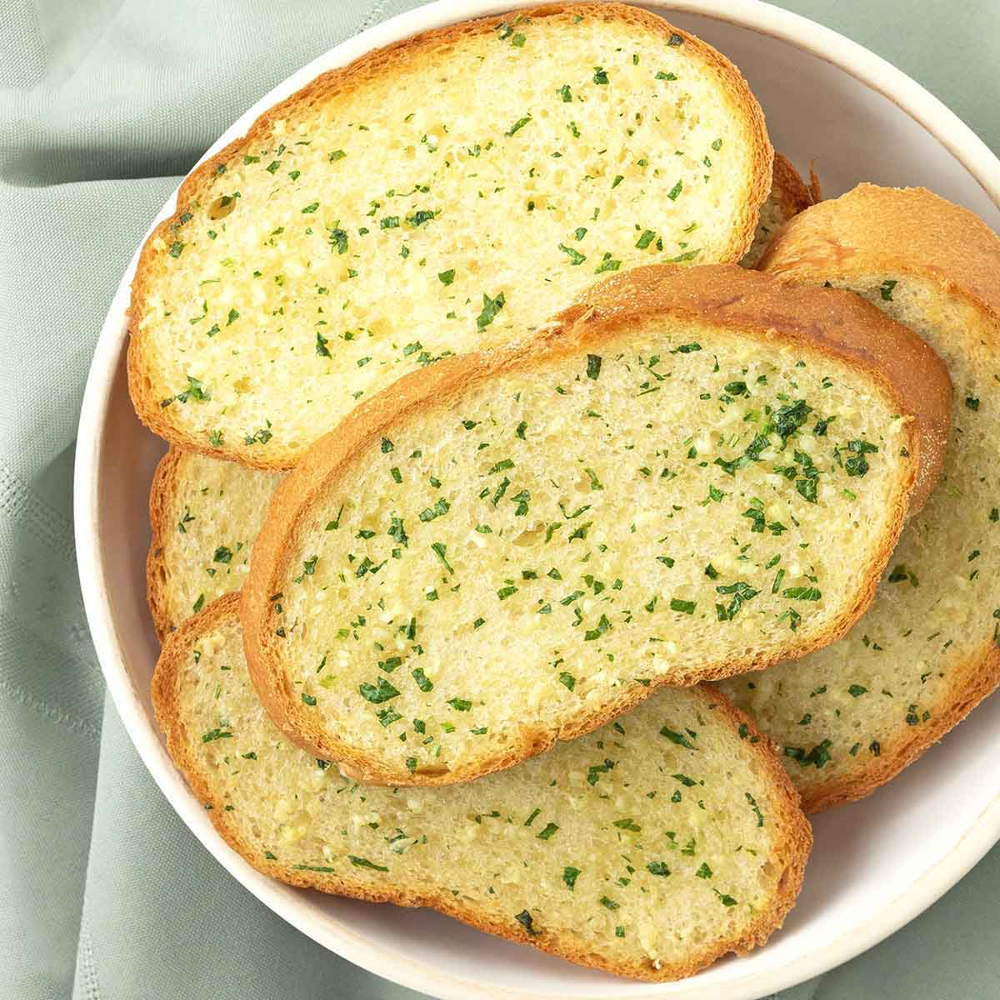

🍞 Garlic Bread.
Description:
Garlic bread (also called garlic toast) consists of bread (usually baguette, sourdough or ciabatta) topped with garlic and occasionally olive oil or butter, and may include additional herbs, such as oregano or chives. It is then either grilled until toasted or baked in a conventional or bread oven. Garlic bread is typically made using a baguette, or sometimes ciabatta which is partially sliced downwards, allowing the condiments to soak into the loaf while keeping it in one piece. The bread is then stuffed through the cuts with oil and minced garlic before baking. Alternatively, butter and garlic powder are used, or the bread is cut lengthwise into separate slices which are individually garnished.
Ingredients:
- ½ cup butter
- 1 ½ tablespoons garlic powder
- 1 tablespoon dried parsley
- 1 (1 pound) loaf Italian bread, cut into 1/2 inch slices
- 1 (8 ounce) package shredded mozzarella cheese
Steps:
- Gather all ingredients.
- Preheat the oven to 350 degrees F (175 degrees C).
- Melt butter in a small saucepan over medium heat; stir in garlic powder and dried parsley.
- Place bread slices on a medium baking sheet. Using a basting brush, brush bread generously with melted butter mixture.
- Bake in the preheated oven until lightly toasted, about 10 minutes.
- Sprinkle bread with mozzarella cheese and any remaining butter mixture. Continue baking until cheese is melted and bread is lightly browned, about 5 minutes.